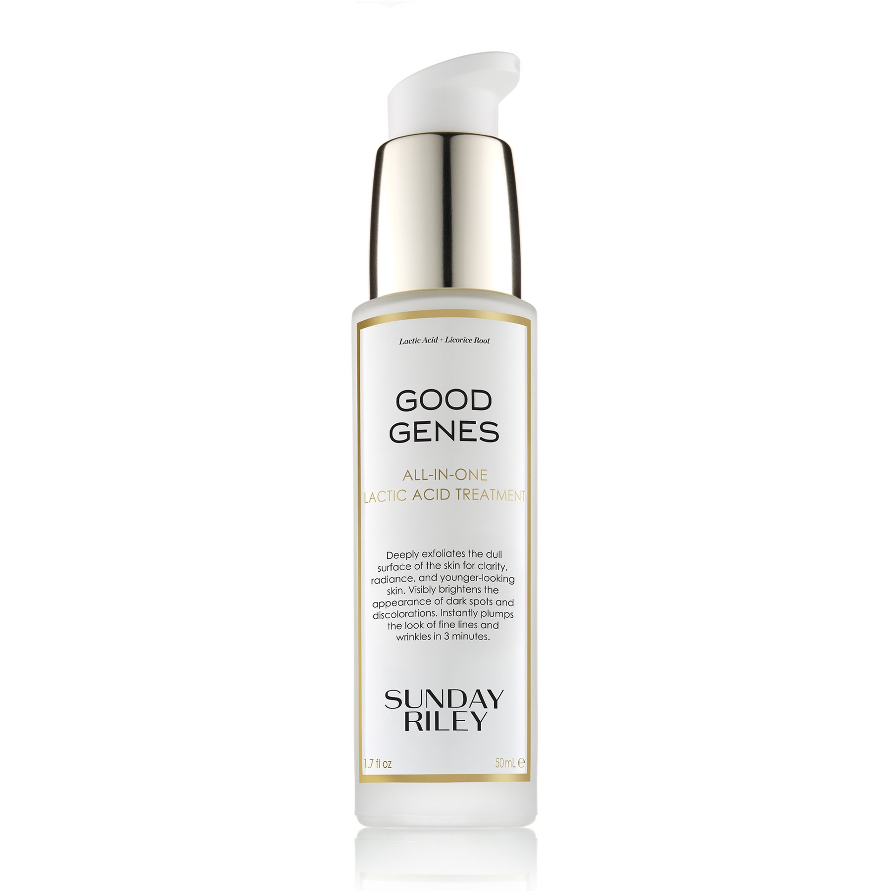

Check Out My Recent Reviews
Good Genes By Sunday Riley:Skincare
Good Genes by Sunday Riley is a lactic acid moisturizing treatment for the face. I purchased mine on sephora. You can check it out on their direct website here. Good Genes is an all-in-one AHA and Lactic acid treatment. According to the website, it is great to smooth bumpy/rough skin, brighten appearance of dark spots, clarify skin, is good for all skin types and can create an instant glow. So many promises!
Well, did it deliver? This review has a lot of parts. I'll start with the instant glow since that is what you may notice. I used this as my daily moisturizer. I felt it did double duty my exfoliating gently and moisturizing. It is perfect for a daily moisturizing option. It is not greasy at all, yet does leave a smooth looking supple glow. And you all know as a redhead, I have sensitive skin AND live by an ocean so my skin takes a beating during the day. This didn't cause any irritation or dryness. I wanted to be in love right away, but lets call it lust for now.
Okay now lets talk long term results. I have been using this for over 12 weeks now. Some MAJOR benefits I've noticed are as follows...
- The tiny bumps I got from sweating while working out/running are GONE!
- My overall skintone is less red and more even
- My skin does seriously glow!
- I have no more breakouts. Mayyybe a tiny little hormonal bump but...
- If I have a breakout of any sort it goes away very quickly!
- My skin looks way smoother, tighter and my pores are shrinking
Alright so are there any cons? My only complaint is the price. I am a firm believer in you get what you pay for in beauty and hair care (for the most part) and I think this is worth a high price tag. That being said, the bottle isn't very big for the price (I paid $122 USD for a 1.7fl oz bottle, though you can get smaller for half the price at sephora).The product doesn't last me long compared to heavier creams or oils/serums and I only use about a half of a pea size amount. A little goes a long way but the bottle still only last me about 30 days or so.
Conlusion: If you have the budget for a product like this it can be your only day-time product or you can layer underneath a night oil (see my review on Sunday Riley's Luna Night Oil here). If you don't want to spend that much, you may need several products to achieve the results of this one pricey. So, you win some you lose some. I hate having a multi-step skincare routine so for me, this is well worth the price!
I hope you loved reading this review. Just to note, I do not recieve any affiliate money or sponsorship for these products. This is my personal skincare trials and opinions.